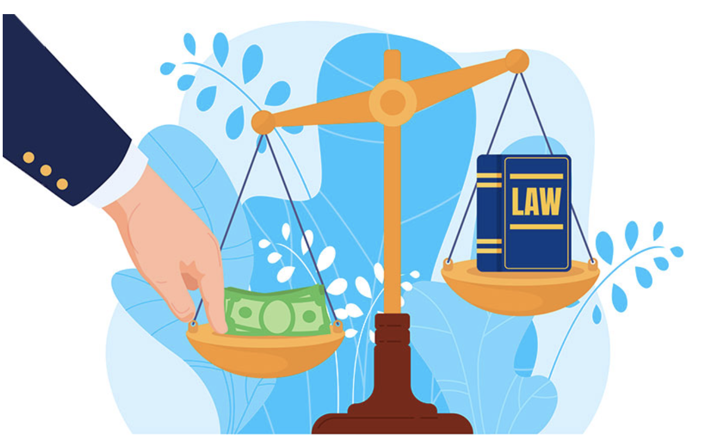
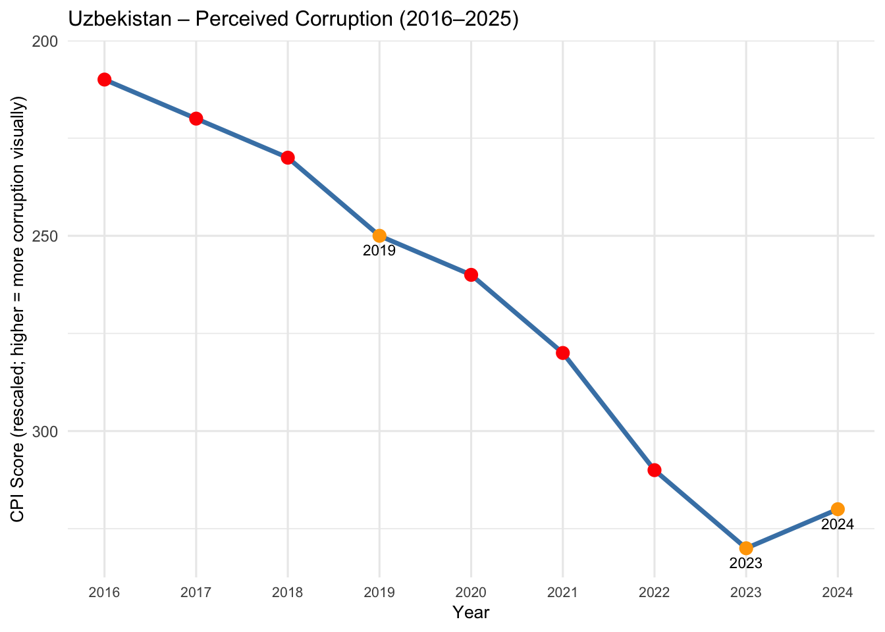

Individual Report - How is Corruption Affecting Happiness?
Author
Viktoria Axelsson
Published
December 10, 2025

Introduction
This report examines the relationship between corruption and happiness, both globally and in the context of Uzbekistan. At the global level, we analyze countries with the highest and lowest Corruption Perceptions Index (CPI) scores in 2023 to understand whether low corruption aligns with higher happiness and whether high corruption is generally associated with lower well-being. By comparing CPI scores with happiness rankings, we can identify patterns and notable exceptions, revealing the complex relationship between corruption and national happiness.
Beyond the global perspective, the report focuses in detail on Uzbekistan, a particularly interesting case due to its significant anti-corruption reforms since 2016 and the availability of data from 2016–2025. By examining both perceived corruption and happiness rankings over this period, we explore whether reductions in corruption correspond with improvements in well-being, while also considering the influence of broader social, economic, and political factors, such as health, education, infrastructure, and public optimism.
What is Corruption and CPI
Corruption refers to the abuse of entrusted power for private gain. It can occur in both public and private sectors and includes practices such as bribery, embezzlement, nepotism, favoritism, and manipulation of policies or resources for personal benefit. Corruption undermines trust in institutions, reduces government effectiveness, and can negatively impact economic development, social equality, and public well-being.
In the context of this report, corruption is measured using the Corruption Perceptions Index (CPI), which reflects the perceived level of public sector corruption based on expert assessments and surveys. Higher CPI scores indicate lower corruption, while lower scores indicate higher corruption. By analyzing CPI scores alongside happiness rankings, we can explore how perceived corruption may influence citizens’ satisfaction and overall well-being.
1. Get dataset for happiness ranking 2019-2025 and a separate for corruption index
Happiness Ranking: The happiness ranking dataset from the World Happiness Report is publicly available and includes country rankings from 2019–2025. For each country, the dataset provides detailed information on multiple factors contributing to happiness, including:
Perceived corruption
Generosity
Freedom
Health and social support
GDP per capita
Dystopia + residual, which represents the unexplained portion of a country’s happiness score
This dataset captures the population’s perceptions and experiences that influence happiness, offering insights into both objective and subjective well-being.
Corruption Index: While the happiness dataset reflects perceptions of how corruption affects happiness, it does not measure actual corruption levels. To analyze the real impact, we use the Corruption Perceptions Index (CPI) from Our World in Data, which provides scores for each country from 2019–2025. The CPI measures perceived levels of public sector corruption based on expert assessments and surveys, giving a more objective comparison of corruption across countries.
By combining these two datasets, we can compare the corruption index score with overall happiness rankings in depth for specific countries. This approach allows us to identify patterns and exceptions, and to explore whether lower corruption consistently aligns with higher happiness, or whether other social, economic, or political factors play a significant role.
To ensure that I have done the setup properly, I wanted to see the column names. This also helps to identify how to combine and filter them in the next steps.
Code
# Quick column check print(colnames(cpi_df))
[1] "Entity" "Code"
[3] "Year" "Corruption Perceptions Index"
[5] "World regions according to OWID" "time"
Code
print(colnames(happiness_df))
[1] "Year"
[2] "Rank"
[3] "Country name"
[4] "Life evaluation (3-year average)"
[5] "Lower whisker"
[6] "Upper whisker"
[7] "Explained by: Log GDP per capita"
[8] "Explained by: Social support"
[9] "Explained by: Healthy life expectancy"
[10] "Explained by: Freedom to make life choices"
[11] "Explained by: Generosity"
[12] "Explained by: Perceptions of corruption"
[13] "Dystopia + residual"
3. Choose Country and Prepare CPI tibble rescale - Uzbekistan
To investigate the effects of corruption on happiness more closely, I wanted to focus on a specific country with recent historical events and substantial efforts to reduce corruption.
Uzbekistan was chosen because it has implemented significant anti-corruption reforms since 2016, making it an interesting case for exploring the relationship between corruption and happiness. This analysis focuses on data from 2016–2025, which is available for this country.
Here, I want to ensure that the chosen years are highlighted, as these are the periods where we can observe a clear alignment—or lack—between the corruption index and the happiness ranking. Highlighting these years allows viewers to quickly identify key trends and discrepancies when examining the line chart.
Code
# ---------------------------highlight_years <-c(2019, 2023, 2024)uzb_cpi_plot_df <- uzb_cpi_plot_df %>%mutate(highlight = Year %in% highlight_years)uzb_rank_plot_df <- uzb_rank_plot_df %>%mutate(highlight = Year %in% highlight_years)uzb_cpi_plot_df <- uzb_cpi_plot_df %>%mutate(label_y = CPI_Score +5) uzb_rank_plot_df <- uzb_rank_plot_df %>%mutate(label_y = Rank -1.5) # since Rank is inverted, subtract to move label "up" visually
Key Observations
Corruption Trends
7. Build the corruption plot (inverted y-axis so line going down = more corruption)
Although the corruption index is designed so that a higher score indicates worse corruption—meaning the line chart rises as corruption increases—it didn’t make sense to me as a viewer. Intuitively, one might expect the line to go down when there is less corruption. That is why I reversed the order in the graph by inverting the y-axis.
This adjustment makes it easier to align the corruption line with the happiness score, allowing viewers to see the correlation more clearly.
In addition, I chose to highlight in yellow the years that, based on my analysis, have the greatest impact on the conclusions.
Code
corruption_plot <-ggplot(uzb_cpi_plot_df, aes(x = Year, y = CPI_Score)) +geom_line(color ="steelblue", linewidth =1.25) +geom_point(aes(color = highlight), size =3) +scale_color_manual(values =c("TRUE"="orange", "FALSE"="red"), guide ="none") +#label for highlighted points with the yeargeom_text(data =subset(uzb_cpi_plot_df, highlight ==TRUE),aes(x = Year, y = label_y, label = Year),size =3,vjust =0,show.legend =FALSE ) +scale_x_continuous(breaks =seq(years_min, years_max, by =1), minor_breaks =NULL) +scale_y_reverse(expand =expansion(mult =c(0.02, 0.08))) +# invert y-axis, adding space at top-right for labelslabs(title ="Uzbekistan – Perceived Corruption (2016–2025)",x ="Year",y ="CPI Score (rescaled; higher = more corruption visually)" ) +theme_minimal(base_size =12) +theme(plot.title =element_text(size =12),axis.title =element_text(size =10),axis.text.x =element_text(size =8, angle =0),axis.text.y =element_text(size =9) )# Display corruption plotprint(corruption_plot)

Code
#save for use to presentation ggsave("/Users/ViktoriaAxelsson/Desktop/uzbekistan_corruption.png",plot = corruption_plot, width =8, height =5, dpi =300)
NoteKey Finding
As seen in the line chart above, perceived corruption in Uzbekistan decreased notably from 2016 onwards, reaching its lowest point in 2023, followed by a slight increase in 2024. However, overall corruption remains much lower than in earlier years.
Happiness Trends
8. Build the happiness rank plot (inverted y-axis so lower rank (happier) appears higher)
As explained for the corruption plot, I wanted to do the same thing for the happiness ranking here as well. The happier a country is, the higher it should appear on the plot.
Code
happiness_plot <-ggplot(uzb_rank_plot_df, aes(x = Year, y = Rank)) +geom_line(color ="forestgreen", linewidth =1.25) +geom_point(aes(color = highlight), size =3) +scale_color_manual(values =c("TRUE"="orange", "FALSE"="darkgreen"), guide ="none") +# Labeled the highlighted points with the yeargeom_text(data =subset(uzb_rank_plot_df, highlight ==TRUE),aes(x = Year, y = label_y, label = Year),size =3,vjust =0,show.legend =FALSE ) +scale_x_continuous(breaks =seq(years_min, years_max, by =1), minor_breaks =NULL) +scale_y_reverse(expand =expansion(mult =c(0.02, 0.08))) +labs(title ="Uzbekistan – World Happiness Rank (2016–2025)",x ="Year",y ="Happiness Rank (lower = happier)" ) +theme_minimal(base_size =12) +theme(plot.title =element_text(size =12),axis.title =element_text(size =10),axis.text.x =element_text(size =8),axis.text.y =element_text(size =9) )# Display and save happiness plotprint(happiness_plot)
As seen in the line chart above, happiness rankings improved steadily from 2016–2019, peaking in 2019.
In the following years, happiness declined, even as corruption continued to decrease — except in 2023, when the lowest corruption coincided with a noticeable increase in happiness.
Interpretation of Findings
9. Combine side-by-side and save combined image
To make it possible to compare the two datasets and findings, and see whether they correlate, I combined them side by side. This way, you can easily see where they are similar and where they differ.
With this chart, you can now observe whether the country’s happiness has risen or fallen as corruption has increased or decreased over the years.
# Save combined as PNGggsave("/Users/ViktoriaAxelsson/Desktop/uzbekistan_combined.png",plot = combined_plot, width =16, height =6, dpi =300)
NoteKey Finding
As seen in the line charts side by side above, the data suggests:
There is a partial relationship between corruption and happiness. From 2016 - 2019, corruption steadily decreased while the country went up in the hapiness ranking. In 2023–2024, large changes in corruption levels corresponded with shifts in happiness, implying that corruption can influence happiness in a country.
The trends are not fully consistent. For example, in 2019, Uzbekistan’s happiness was at its peak despite corruption levels not reaching its lowest point, indicating that other social, economic, or political factors played a larger role in shaping well-being 2019.
Additional information during these years worth noting in alignment with the data:
2019: Multiple economic and social reforms were underway with support from the World Bank, including a $500 million loan for private-sector growth, job creation, social inclusion, and reforms in health, education, and infrastructure.
Tax burdens were also reduced, and many international development investors became involved. A World Bank study found that 95% of households were optimistic about the future, suggesting that happiness in 2019 was driven more by broader reforms and optimism than only by changes in corruption.
2023: A presidential election took place, accompanied by new reforms expanding human-rights and civil-liberties protections, as well as measures to improve government transparency and accountability.
These changes likely contributed to the perception of lower corruption and to an associated increase in happiness.
2024: Anti-corruption efforts continued. Reports indicated that while bribery cases decreased, other forms of corruption increased, including embezzlement, abuse of office, and illegal state procurement. For example, the country’s anti-corruption agency disclosed that illegal state procurements totaling a substantial sum were uncovered in 2024.
This helps explain why perceived corruption rose slightly during that year and why the happiness ranking declined.
Overall Key Takeaways - Uzbekistan
In 2023 and 2024, changes in corruption appear to have had a more direct influence on happiness, with reductions in corruption aligning with increases in well-being and slight rises in corruption coinciding with declines. By contrast, in 2019, happiness peaked despite relatively higher corruption levels, indicating that other factors—such as economic and social reforms, health, education, infrastructure improvements, and international support—played a more dominant role.
Overall, Uzbekistan’s case illustrates that while corruption can affect happiness, broader social, economic, and policy factors are also crucial determinants of well-being, and understanding these influences is essential for improving happiness at the national level.
Overall comparison of countries with highest vs lowest corruption index
To deepen the analysis, I examined how countries with the highest and lowest corruption index scores correlate with happiness rankings. For this, I focused on data from 2023, which required filtering the datasets for that year and merging them to allow a direct comparison between corruption levels and happiness outcomes.
# A tibble: 20 × 4
Country CPI HappinessRank Group
<chr> <dbl> <dbl> <chr>
1 Venezuela 13 79 Most Corrupt (Low CPI)
2 Yemen 16 133 Most Corrupt (Low CPI)
3 Nicaragua 17 43 Most Corrupt (Low CPI)
4 Libya 18 66 Most Corrupt (Low CPI)
5 Afghanistan 20 143 Most Corrupt (Low CPI)
6 Chad 20 113 Most Corrupt (Low CPI)
7 Comoros 20 132 Most Corrupt (Low CPI)
8 Myanmar 20 118 Most Corrupt (Low CPI)
9 Tajikistan 20 88 Most Corrupt (Low CPI)
10 Cambodia 22 119 Most Corrupt (Low CPI)
11 Denmark 90 2 Least Corrupt (High CPI)
12 Finland 87 1 Least Corrupt (High CPI)
13 New Zealand 85 11 Least Corrupt (High CPI)
14 Norway 84 7 Least Corrupt (High CPI)
15 Singapore 83 30 Least Corrupt (High CPI)
16 Sweden 82 4 Least Corrupt (High CPI)
17 Switzerland 82 9 Least Corrupt (High CPI)
18 Netherlands 79 6 Least Corrupt (High CPI)
19 Germany 78 24 Least Corrupt (High CPI)
20 Luxembourg 78 8 Least Corrupt (High CPI)
The next step was to prepare a table that lists the countries in the least and most corrupt groups. This provides a clear reference for viewers, allowing them to easily connect each country to the corresponding color in the scatterplot legend and better understand the relationship between corruption levels and happiness rankings.
Code
# ---- Prepare 2023 data for plotting ----plot_df <- merged_2023 %>%mutate(Group =case_when( Country %in% top10_most_corrupt$Country ~"Most corrupt (bottom 10)", Country %in% top10_least_corrupt$Country ~"Least corrupt (top 10)",TRUE~"Other" ) ) %>%mutate(tooltip =paste0("Country: ", Country,"<br>CPI: ", round(CPI, 1),"<br>Happiness Rank: ", HappinessRank,"<br>Group: ", Group ) )# Prepare the table datatable_df <-data.frame("Least Corrupt (High CPI)"= top10_least_corrupt$Country,"Most Corrupt (Low CPI)"= top10_most_corrupt$Country,stringsAsFactors =FALSE)# Display table with colored headerskable(table_df, align ="c", caption ="Top 10 Most and Least Corrupt Countries – 2023") %>%kable_styling(full_width =FALSE, position ="center") %>%column_spec(1, color ="white", background ="green4") %>%column_spec(2, color ="white", background ="red")
Top 10 Most and Least Corrupt Countries – 2023
Least.Corrupt..High.CPI.
Most.Corrupt..Low.CPI.
Denmark
Venezuela
Finland
Yemen
New Zealand
Nicaragua
Norway
Libya
Singapore
Afghanistan
Sweden
Chad
Switzerland
Comoros
Netherlands
Myanmar
Germany
Tajikistan
Luxembourg
Cambodia
Code
# 6) Scatterplot: Happiness Rank vs CPI (2023)# ---- Prepare 2023 data with tooltip ----plot_df <- plot_df %>%mutate(tooltip =paste0("Country: ", Country,"<br>CPI: ", round(CPI, 1),"<br>Happiness Rank: ", HappinessRank,"<br>Group: ", Group ) )# ---- Scatterplot with ggplot ----p_static <-ggplot(plot_df, aes(x = CPI, y = HappinessRank, color = Group, text = tooltip)) +geom_point(size =3, alpha =0.9) +geom_smooth(aes(x = CPI, y = HappinessRank), method ="lm", se =TRUE,color ="black", linetype ="dashed", inherit.aes =FALSE) +scale_color_manual(values =c("Most corrupt (bottom 10)"="red","Least corrupt (top 10)"="green4","Other"="grey60" )) +scale_y_reverse() +# lower rank (happier) at toplabs(title ="Happiness Rank vs CPI — 2023",x ="Corruption Perceptions Index",y ="Happiness Rank",color ="Group" ) +theme_minimal(base_size =12) +theme(plot.title =element_text(size =14, face ="bold"),axis.title =element_text(size =12),axis.text =element_text(size =10),legend.position ="right" )# ---- Convert to interactive plot with tooltip ----p_interactive <-ggplotly(p_static, tooltip ="text")
`geom_smooth()` using formula = 'y ~ x'
Code
# ---- Display interactive plot ----p_interactive
Code
# ---- Optional: save as HTML ----htmlwidgets::saveWidget(p_interactive,"/Users/ViktoriaAxelsson/Desktop/cpi_vs_happiness_2023.html")
NoteKey Finding
In this 2023 scatterplot, we can observe a clear trend: the least corrupt countries generally occupy the highest positions in global happiness rankings. For example, Finland is ranked the happiest country in the world, with a CPI score of 87, followed closely by Denmark at number two with a CPI of 90. Both countries demonstrate exceptionally low levels of perceived corruption, suggesting that transparency and good governance may contribute to the overall well-being of their populations.
In contrast, the most corrupt countries generally appear lower in the happiness rankings, often falling between 50th and 150th place. This pattern supports the idea that higher corruption can negatively impact citizens’ satisfaction and trust in institutions, which in turn affects overall happiness.
Yet, there are notable exceptions to this trend. Nicaragua, despite being among the 10 most corrupt countries globally, ranks 43rd in happiness. Similarly, Mexico, with a relatively low CPI of 31, achieves the 25th position, and Kuwait ranks 13th happiest despite a moderately high CPI of 46. These examples illustrate that corruption alone does not fully determine a country’s happiness; other social, economic, and cultural factors clearly play an important role.
Conversely, some countries with very low corruption scores do not rank among the very happiest. For instance, Singapore has a CPI of 83, reflecting low perceived corruption, yet it is only ranked 30th in happiness—five places behind Mexico. This demonstrates that while low corruption is often associated with higher happiness, it is not a sufficient condition on its own; other variables, such as income distribution, social support, and public services, likely influence overall well-being alongside governance.
Overall, the 2023 data highlights a general alignment between low corruption and higher happiness, while also underscoring the complexity of the relationship: happiness is multifaceted, and a country’s well-being is shaped by the interplay of multiple factors beyond corruption alone.
Conclusion
Corruption can influence happiness, but it is not the sole determinant. Uzbekistan’s case shows that reductions in corruption can improve well-being, as observed in 2023–2024. However, broader trends in happiness often depend heavily on other social and economic factors, such as economic reforms, health, education, and government policies.
The 2023 global data further illustrates that low corruption generally aligns with higher happiness—countries like Finland and Denmark top the happiness rankings with very low CPI scores. Yet exceptions exist: some highly corrupt countries, such as Nicaragua and Mexico, still rank relatively high in happiness, while certain low-corruption countries, like Singapore, are not among the very happiest. This suggests that corruption plays a role, but it is only one of several factors shaping national well-being.
Future research exploring these additional influences would provide a more complete understanding of what drives happiness. As our group work has shown, other factors—such as climate, vacation time, and income—also contribute to happiness, each in different ways.
In addressing the overarching question of which country is the happiest and why, the answer is straightforward: Finland, ranked the happiest country for the eighth consecutive year. This demonstrates that consistent policies and social structures can support national well-being. Yet our study also confirms that no single factor alone guarantees happiness; it is the combination of multiple elements that determines a country’s overall happiness.